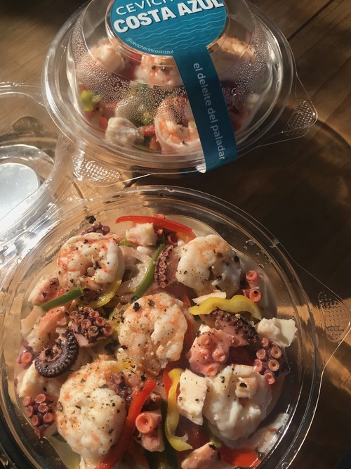
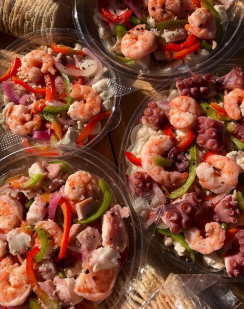

Somos fanaticos del sabor
La calidad, frescura y salubridad de nuestros productos son la base de nuestro servicio. Nuestro compromiso es brindar un servicio de excelencia para que tu en tu casa solo te dediques a disfrutar de los mejores mariscos.
Costa Azul se especializa en la elaboración del exquisito placer del mar conocido como ceviche. En los últimos años este platillo se ha extendido por toda Latinoamérica y ha llegado a nuestras manos a partir de una receta familiar que nos ha dado el honor de rescatar lo tradicional y representar el delicioso sabor del ceviche original, dejando nuestro pequeño grano de arena al expresar honestidad, esfuerzo y dedicación del gran sabor venezolano.


